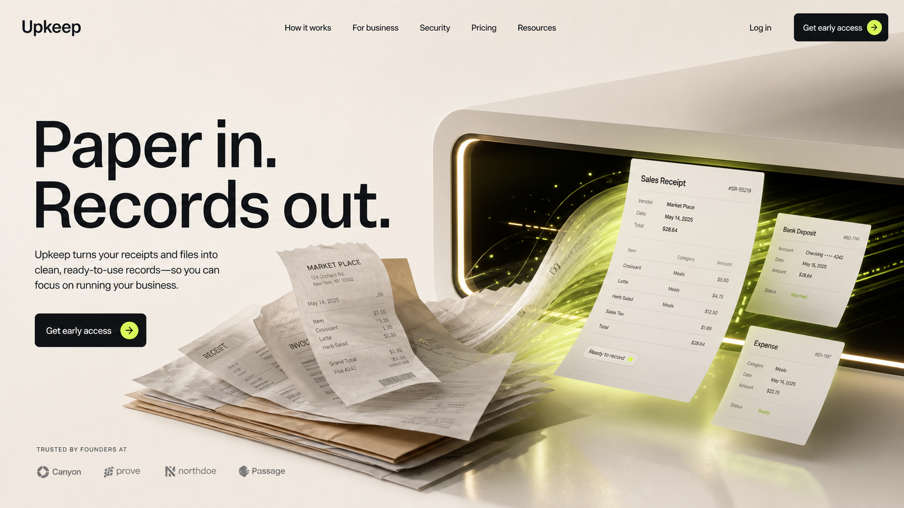
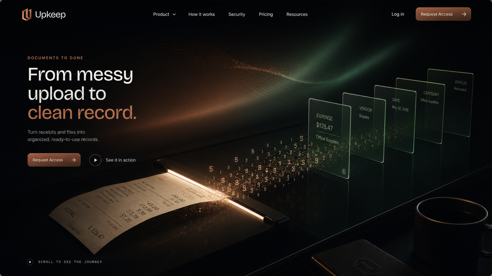
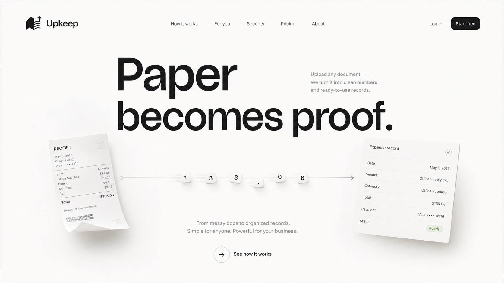
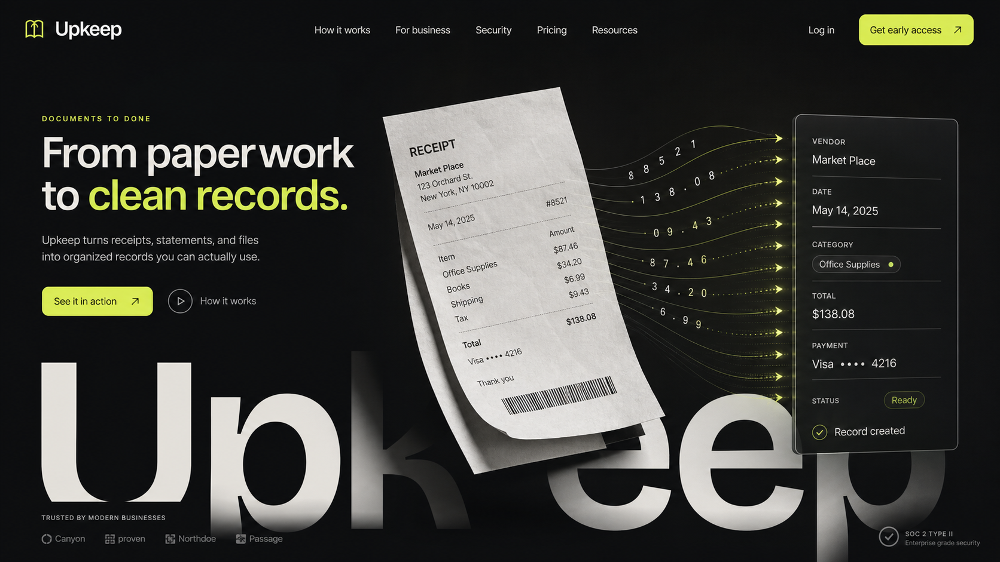
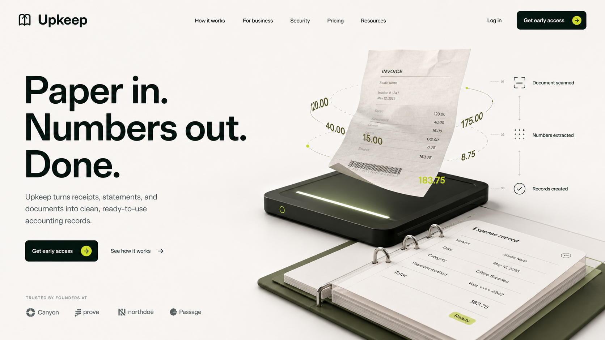

Hero
One memorable scan-to-record visual. Short promise. No software lecture.
Design setup
The site should sell the feeling: Upkeep takes a messy pile and makes a calm, usable record trail in seconds. The technology stays behind the curtain.
I am assuming the first buyer is a busy small-business operator, the mood is sleek automation magic, and the CTA is request access.
Every section should reduce friction or make the transformation more believable.
One memorable scan-to-record visual. Short promise. No software lecture.
Document enters, numbers clarify, records are ready. This becomes the motion spine.
Receipts, statements, work orders, and forms appear as tangible results.
Show review and export only after the visitor understands the transformation.
No complex software. No accounting knowledge needed. The user stays in control.
Close with one decisive action, not a menu of competing asks.
These are direction probes. Choose the mood, then the motion system gets built around it.

Best if the brand should feel premium, calm, and physical. Use this when the hero needs a real object.

Best if we want Dark.design energy: sleek, focused, and almost cinematic at night.

Best if the brand should feel almost effortless. Strong for Webflow export and clean Rive motion.

Best if we want the most memorable first impression. The brand itself becomes the machine.

Best if we want Spline-like depth without forcing true 3D before the concept proves it needs it.
The design wins only if a visitor understands the transformation before they understand the technology.
No generic dashboard hero. No OCR lecture. No stack of floating SaaS cards. The first view needs one memorable artifact: messy input becoming clean output.
They move through a visible process: received, read, turned into numbers, and shaped into records the user can keep or export.
The document path, extracted numbers, record assembly, and confirmation moments. Backgrounds can breathe, but they should never become the product.
First buyer, desired mood, and primary CTA. Current assumption: small-business operator, sleek automation magic, request access.
These prototypes are intentionally simple: scan, extract, organize. Once a lane wins, these become Rive, Shader Gradient, Lottie, or Spline assets.
Core hero motion. This is the product story in one loop.
States: upload, reading, numbers found, form ready. This becomes the editable Rive file.
A restrained animated field should guide attention toward the scan path, not decorate the page.
Micro-motion for successful upload, ready record, and exported form states.
Do not force 3D. Do not fake every asset in CSS. Pick the smallest serious tool that makes the chosen direction feel alive.